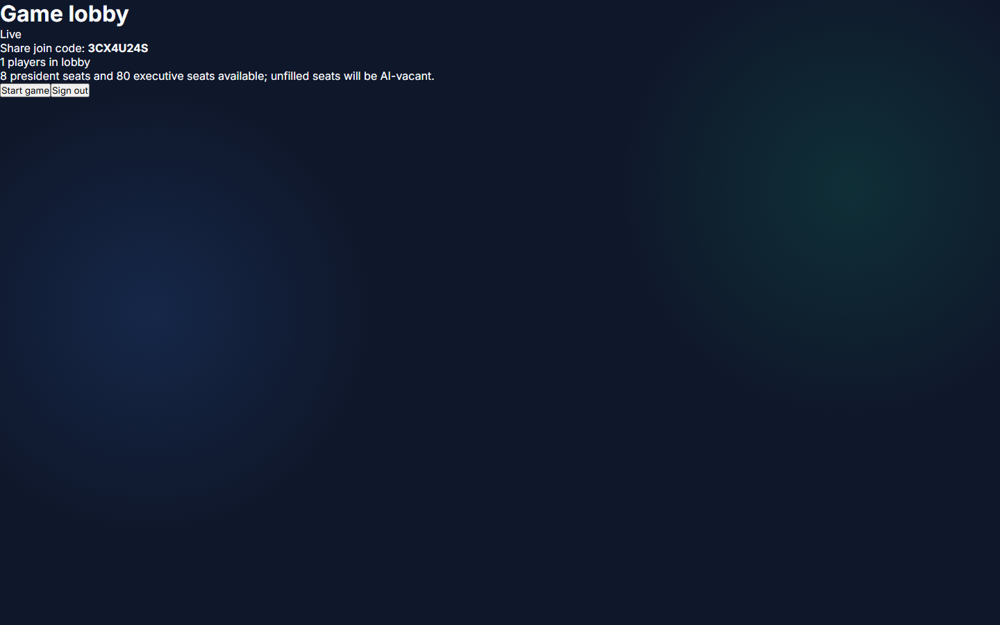
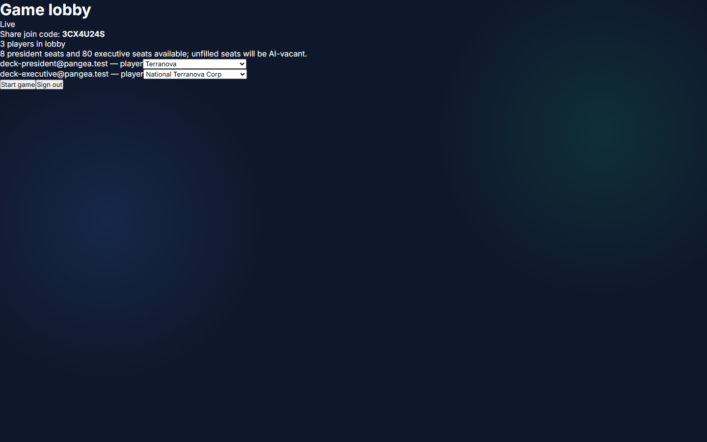
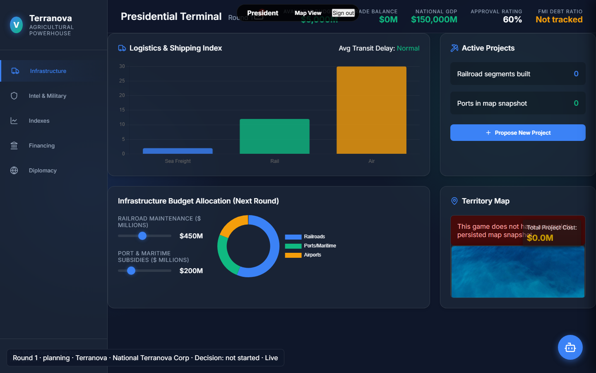
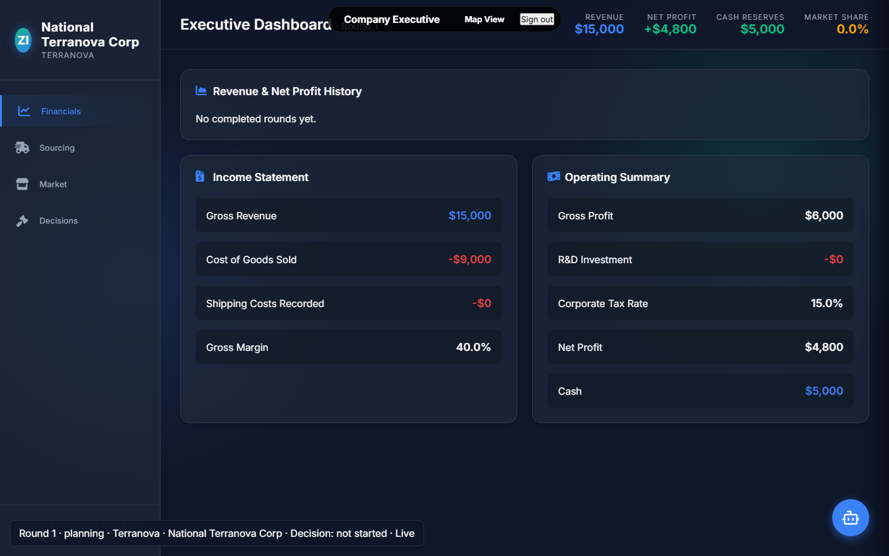
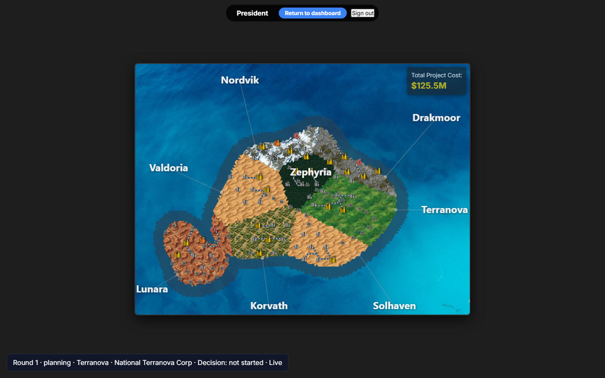

A visual guide to the real game pages, expected decisions, and the instructor-led round cycle. Use the arrow keys or buttons to present; print to PDF for a handout.
The first local account becomes the instructor. Other accounts can join only after receiving a lobby code.
This is access control, not a game decision screen. Do not share passwords; share the lobby code instead.

Players appear here after joining. The game cannot start until the map has been persisted and seats are assigned.
Use it as the classroom setup room. Keep the code visible only until everyone has joined.

Role permissions are enforced by the server. A President cannot submit company decisions, and an Executive cannot submit national policy.
This is the source of truth for ownership. Explain that each seat has different private information and responsibilities.
Late players receive conservative automatic submissions when the deadline is enforced. Phase changes and results refresh across connected clients.
Use it as a facilitator control panel, not a player dashboard. It is where you pace discussion and keep the class synchronized.

Budget choices have trade-offs. Preparedness is public recovery funding; insufficient coverage can create private recovery costs and lower approval/GDP after a disaster.
Think like a government: balance resilience, civilian investment, and long-term national performance. Submit once the plan is defensible.

Company choices are private before processing. Spending must be affordable, and submitted decisions feed the authoritative round resolver.
Think like a business leader: protect cash, make a credible operating plan, and account for national conditions without assuming private government choices.

All players receive the same public round result and news after processing. Event results expose public effects, not other players’ private pre-processing choices.
The map is the shared context; results are the debrief. Ask: What happened? Why? What would we change next round?
Key expectation: Players submit intent; the server validates and resolves it. Reloading or reconnecting restores the canonical game state.